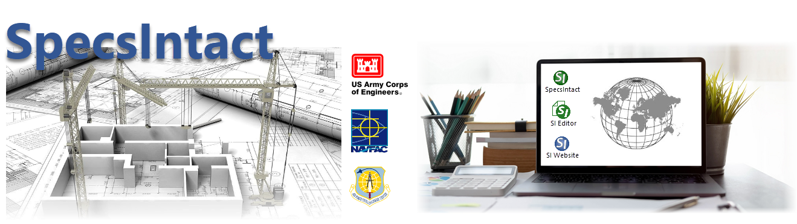

SpecsIntact is an automated Specification Management System and is the latest generation of software for preparing facility construction specifications used worldwide by the U.S. Army Corps of Engineers (USACE), Naval Facilities Engineering Command (NAVFAC), and Air Force Civil Engineer Center (AFCEC). SpecsIntact utilizes Master Guide Specifications prepared by Government agencies, which are at the heart of what makes the system unique.
SpecsIntact consists of two main components, the SpecsIntact Explorer and the SI Editor. Through the SpecsIntact Explorer, you can accomplish all the project management -- creating new projects and processing completed ones to include Quality Assurance reports that are key to delivering accurate and consistent specifications. The SI Editor is used to adapt the Master Guide Specifications to your project. The software makes it possible to ensure quality control for project specifications from beginning to end.
The SpecsIntact system is managed at the U. S. Army Corps of Engineers, Huntsville Engineering and Support Center, and used by engineers, architects, specification writers, project managers, and construction managers doing business with all government agencies. SpecsIntact and the UFGS Master are government-funded, so they are available at no cost, unlike many specification programs today.
For additional assistance, you are encouraged to visit the SpecsIntact Website's Support & Help Center page (accessible from the SpecsIntact Explorer's Help menu) and to check our Home page frequently for updates in software, Master and user tools, such as the eLearning modules (self-directed online training).
As always, the SpecsIntact Technical Support team will assist you when you can't find the answers you need.